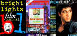

DVD Review Archive
Feature Archive Back Issues Links DVD MIA DVD
Alerts Movie Posters Laser Site Info Home E-mail
© 2002 Films on Disc Stuart J. Kobak ALL RIGHTS RESERVED.
|
|
The sequel to the Hong Kong action flick The Heroic Trio, The Executioners picks up on the adventures of its three women super heroes after many intervening adventures and is set in a bleak future where water is the most precious element. Fans of the first film will find the sequel lacking the whimsy and energy of the original. There's significantly less fighting and wire work (When Hong Kong action stars fly through the air during fights, it's called wire work.) and this time out the story may be more ambitious, but the filmmakers are over their head with no wires to keep them aloft.
Anita Mui, Michelle Yeoh and Maggie Cheung Redux
the roles of the three heroines. Maggie gets to spend a lot of screen time with a little girl and
she is a lot more charming than the child actress. Lacking is the entertaining rivalry that the
ladies had in the first film. There's some underground scenes, but they dull by comparison to the
fantastic world of Heroic Trio.
|
|
Redeeming
the Writer:
 |


.jpg)